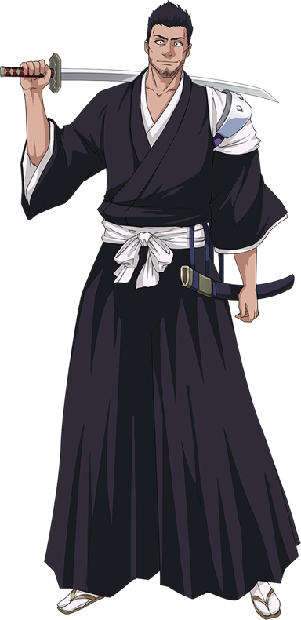

Ишшин Куросаки, ранее известный как Ишшин Шиба, — бывший капитан десятого отряда, муж Масаки Куросаки, отец Ичиго, Карин и Юзу. Ишшин — бывший глава одной из ветвей клана Шиба и нынешний глава семьи Куросаки.
Внешость
Ишшин — высокий мускулистый человек с чёрными колючими волосами и карими глазами. Обычно ходит с щетиной на лице вокруг рта и на щеках. Как врач Ишшин обычно носит белый халат поверх более повседневной рубашки и брюк. Он выглядит как мужчина за сорок, как отметила его дочь Карин.
Как синигами он носит стандартную униформу вместе с потрёпанным капитанским хаори, которое он носит как перевязь на своём левом плече, так, что эмблему отряда не видно.
Когда Ишшин был капитаном десятого отряда, он носил типичную униформу синигами с капитанским хаори без рукавов. У него были заметные бакенбарды, в остальном он был выбрит; также его волосы были немного короче.
Характер
Ишшин чаще всего энергичен, весел, и ведёт себя дурашливо. Громкий голос, улыбка до ушей и широкий спектр мимики являются его отличительными чертами. Он любит внезапно нападать на своего сына по любой причине — например, за опоздание на обед, или чтобы просто разбудить его. Как он утверждает, всё это для того, чтобы Ичиго стал сильнее, что на самом деле принесло свои плоды. Ишшин — душа компании, что видно, например, во время фестиваля в Каракуре. Начав веселиться со своими дочерьми, он в итоге собрал почти всех друзей Ичиго.
Во время своего пребывания в Готее 13 он был ленивым и беззаботным капитаном, который часто пытался заставить своих подчиненных выполнять свою работу за него. По этой причине он был в плохих отношениях с лейтенантом Рангику Мацумото, которая часто была вынуждена призывать его к порядку. Он был в восторге от того, что усердный Тоширо Хицугая делал всю бумажную работу и — во всяком случае, на словах — видел в нём будущее своего отряда.